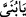

Bu âyet, “Bu tuhaf rüyayı duyan Yâkub ne yaptı?’ şeklindeki muhtemel bir soruya
cevap cümlesidir.
“Babası: “Yavrucuğum, rüyânı” ne tamamını ne de bir bölümünü “kardeşlerine
anlatma.”
“
/ yavrucuğum” kelimesi, Yâkub (a.s.)’ın Yûsuf’a duyduğu şefkat ve sevgiden,
Yûsuf’un küçük bir çocuk oluşundan dolayı söylenmiştir. Çünkü geride geçtiği üzere o
sıralar Yûsuf on iki yaşındaydı.
el-İrşâd’da şöyle denilir: “Yâkub (a.s.) bu rüyadan Allah Teâlâ’nın Yûsuf’u
hikmetten büyük bir rütbeye ulaştıracağını, tıpkı değerli atalarına yaptığı gibi
peygamberlik makamına seçeceğini ve onu iki cihan şerefiyle müşerref kılacağını
anlayınca kardeşlerinin ona hased edip bir kötülük yapmalarından korktu. Onları böyle
bir davranışa düşmekten, Yûsuf’u da meşakkatlere katlanmak ve üzüntülere göğüs
germekten korumak için böyle söyledi. Gerçi Allah Teâlâ’nın bunu gerçekleştireceğine
güveni tamdı. Ama bu rüyanın hiç meşakkat çekilmeden gerçekleşmesini arzuladığı için
böyle dedi.
Yûsuf’un kardeşleri, meşhur görüşe göre onun baba bir olan on kardeşidir. Çünkü
Dina’nın erkeklerden sayılması yanlıştır. Çünkü en doğru olan daha önce geçtiği gibi
onun Lea’nın kızı olmasıdır. İrşâdü’l-akli’s-selîm’de geçen “Burada Yûsuf’un
kardeşlerinden maksad diğer hanımlardan olan ve Yûsuf’a karşı komplo
hazırlayacaklarından ve bir gâile çıkaracaklarından endişe edilen on bir çocuktur.
Yûsuf’un ana-baba bir kardeşi olan -ki anneleri Rahil’dir- Bünyamin ise burada dile
getirilen ‘rüyâ anlatma yasağı’na dahil değildir. Çünkü onun Yûsuf’a bir zarar vereceği
düşünülemez, böyle utanç verici bir hale düşmesinden endişe edilemez. Ayrıca rüyâda
öteki kardeşlerle birlikte sayılmış da değildir. Çünkü Yûsuf’a kıssanın sonunda
anlatılan secdede onların yanında değildir.” şeklinde görüş güzel bir görüş değildir.
Hatta doğru bile değildir. Çünkü bu kardeşlerin arasında -Müfti Sâdî’nin Hâşiye’sinde
de belirtildiği üzere- Dina adlı bir çocuk yoktur. Ayrıca Bünyâmin’in rüyâda
kardeşleriyle beraber dâhil olmamasından çoğunluk dikkate alınarak onlardan olmaması
da gerekmez. On birinci kardeş odur.
“sonra sana” yani senin için, seni ortadan kaldırmak için, anlayamayacağın ve
kendini koruyamayacağın gizli “bir tuzak kurarlar.”
Her ne kadar Yâkub bunların, rüyânın gerçekleşeceğine delâlet ettiği şeyi
değiştiremeyeceklerini biliyorsa da onun bu ifadesi sakındırma makamına en uygun
ifadedir.
“Çünkü şeytan insana apaçık bir düşmandır, dedi.” Bu ifade mukadder bir soruya
cevaptır. Sanki Yûsuf’un şöyle sorduğu var sayılıyor: “Peygamberlik evinde doğup
büyümüş olan kardeşlerimden böyle bir fiil nasıl sâdır olur?” Bu soruya şöyle cevap
veriliyor: ‘Çünkü şeytan insanın apaçık düşmanıdır ya da düşmanlığını açıklayandır.
Onun düşmanlığı hem sana, hem de ebnâ-i cinsin olan insanlığa karşı apaçıktır. Zira
anne babanız Âdem ve Havva’yı cennetten çıkaran, üzerlerindeki nûrdan elbiseyi çekip